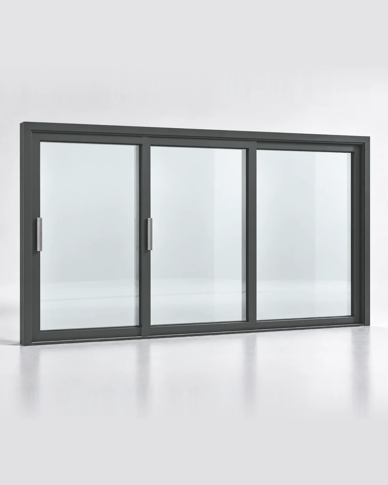
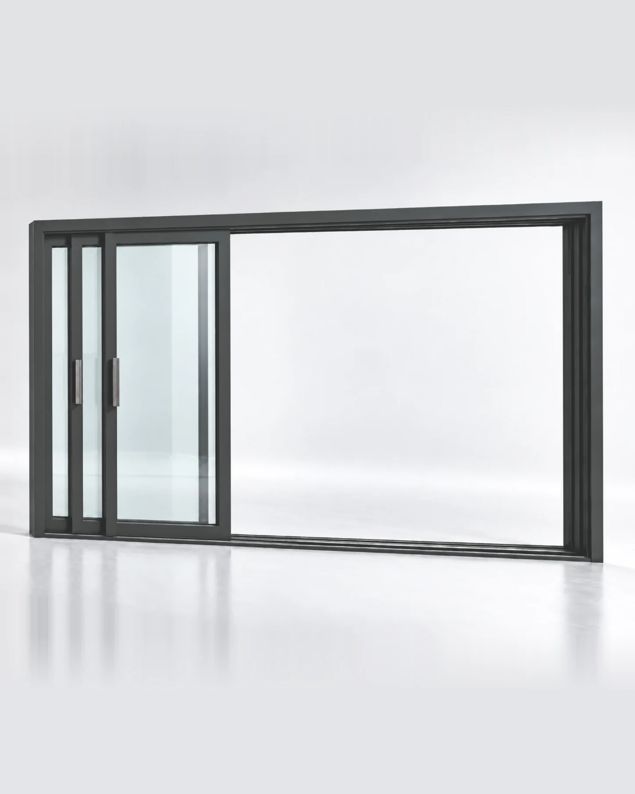

D1 · Графит RAL 702401 · Конфигурация
Две активные створки — больше открытого пространства.
Трёхсекционный HS-портал для широкого выхода на террасу. Две активные створки позволяют освободить большую часть фасадного проёма, сохраняя спокойную панорамную композицию. Артикул фиксирует размер, цвет и схему; если архитектура требует другого решения, рассчитываем отдельную конфигурацию.
Инженерная спецификация
Поставщиков и комплектующие показываем на техническом уровне. Итоговые характеристики конкретной конструкции подтверждаются после расчёта размера и стеклопакета.
- Створка до 3000 мм по ширине
- Створка до 3100 мм по высоте
- Вес створки до 400 кг
02 · Под ваш проём
Другой размер или комплектация?
Посчитаем под ваш проём: калькулятор сразу покажет ориентировочную цену, а инженер после бесплатного замера — точную.
Рассчитать под свой размер →
Система внутри архитектуры
Большая гостиная · терраса · веранда. Портал подбираем по проёму, планировке и маршруту движения, а не только по размеру из каталога.